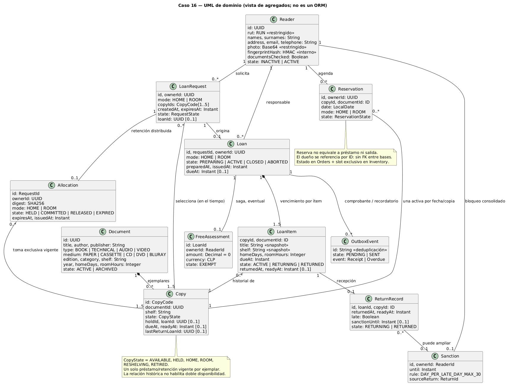
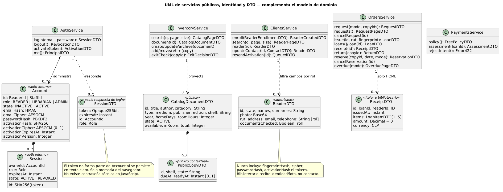
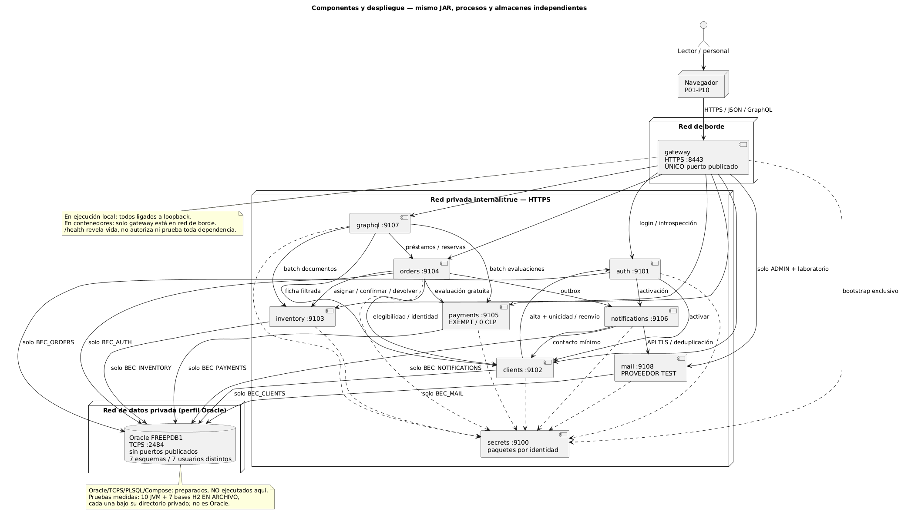
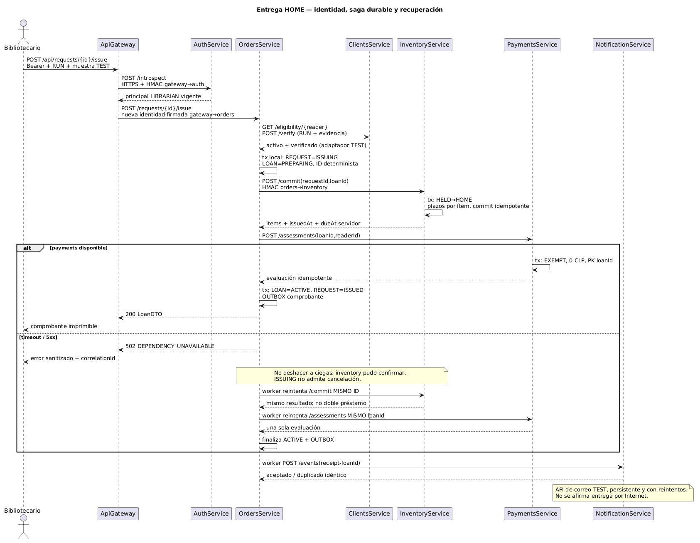
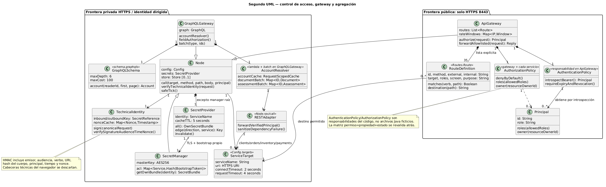
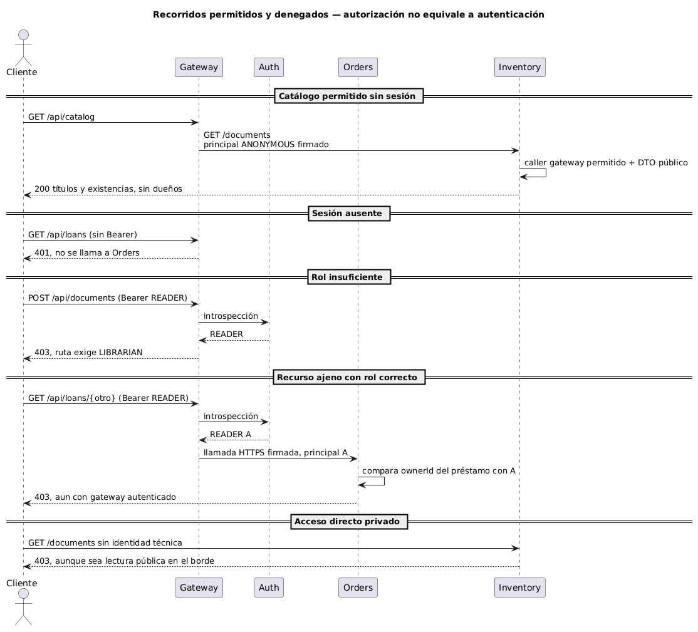
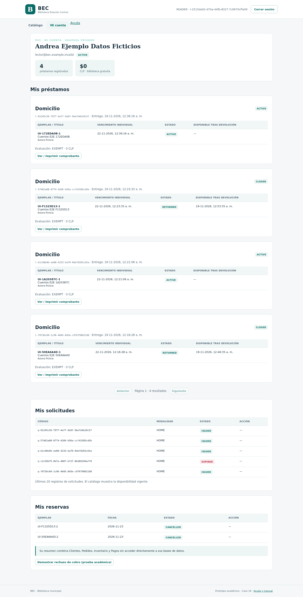

Asignatura: [completar]
Docente: [completar]
Integrantes y sección: [completar; no fueron proporcionados]
Versión: 1.0.0 · Fecha de generación: 19-11-2026 (UTC)
Base documental: Tarea_parte_Backend.pdf, Caso16.docx y material_clases/. Se respeta el caso de Biblioteca Municipal de Estación Central. El documento se llama Caso16, aunque un párrafo interno menciona “Caso 11”; se conserva Caso 16 como identificador de la entrega.
Se implementó una aplicación web nueva, no una ampliación de un frontend recibido. Java 21 orientado a objetos, capas de interfaz/negocio/repositorio, REST, gateway HTTPS, identidad técnica entre servicios, BFF GraphQL privado y persistencia separada. Inventario, pedidos/préstamos, clientes y pagos son procesos independientes, no módulos presentados como microservicios.
| Entregable o condición | Estado y evidencia |
|---|---|
| Backend y seguridad | 23 pruebas aprobadas, cero fallas/errores/omitidas; evidencias/pruebas_backend.json y junit-limpio.xml |
| Frontend real | 13 comprobaciones aprobadas, cero errores JavaScript; evidencias/interfaz.json, capturas P01–P10 |
| Carga | Seis escenarios REST/GraphQL HTTPS medidos; evidencias/carga.json, módulo 9 |
| Oracle obligatorio | Código JDBC, migraciones, procedimientos y despliegue TCPS preparados, NO EJECUTADOS; Docker no disponible en este WSL |
| Correo y dispositivos | API de correo TEST y verificación de muestra/antirrobo software; sin envío Internet, SDK biométrico ni RFID físico |
| Usabilidad institucional | Responsive verificado; aprendizaje <4 h y error humano <1 % pendientes de estudio con personas |
El cumplimiento es una demostración académica probada en H2 en archivo, no una certificación completa del caso en Oracle ni una autorización de producción. Los anexos forman parte de la entrega; no se reemplazan pruebas pendientes por afirmaciones.
Anexos: A contratos.md/.pdf, openapi.json; B contratos_privados.md; C seguridad_operacion.md; D matriz_acceso.csv, rutas_y_credenciales.csv, trazabilidad.csv; E diagramas.pdf y seis fuentes .puml/.svg/.png; F cuatro ADR; G validacion_oracle.md; H manual_usuario.pdf y ayuda web. PDF y DOCX de este informe se generan desde este texto y resultados registrados.
El catálogo contiene libros, documentos técnicos y soportes multimedia, no streaming de audio/video. El administrativo registra y controla morosidad; el bibliotecario mantiene colección y entrega/recibe; el lector activo solicita y reserva. El catálogo del kiosco no exige sesión. La identificación de una persona no se deduce de un readerId enviado por el navegador.
| Pantalla | Usuario y acciones reales | Servicios |
|---|---|---|
| P01 Catálogo/kiosco | Anónimo busca por título, autor o categoría, ve disponibilidad y ejemplares en sala; lector solicita HOME/ROOM y reserva copia/fecha | S05–S06, S17, S25 |
| P02 Acceso/activación | Iniciar/cerrar sesión, activar por enlace y consultar identidad | S01–S04 |
| P03 Mi cuenta | Resumen GraphQL, préstamos/solicitudes/reservas, cancelar pendientes y ver gratuidad; botón TEST de cobro manipulado | S18–S19, S21–S22, S26–S27, S29–S32 |
| P04 Colección | Bibliotecario crea/edita/archiva documentos, incorpora/mueve/retira ejemplares | S07–S12 |
| P05 Fichas | Administrativo inscribe, verifica documentos, busca, actualiza contacto/foto y reenvía activación; ficha por alcance | S13–S16, S35 |
| P06 Preparación/entrega | Bibliotecario ve cola y ubicación, ficha/foto, comprueba RUN y muestra TEST, entrega | S15, S18–S22, S26 |
| P07 Devolución/salida | Bibliotecario devuelve por código y ve disponibilidad futura; control software de salida | S24, S33 |
| P08 Morosidad | Administrativo consulta HOME/ROOM y abre contacto para exigir devolución | S15, S28 |
| P09 Comprobante | Lector titular/bibliotecario ve e imprime HOME, con vencimiento por ítem | S23 |
| P10 Correo TEST | Administrativo inspecciona bandeja del adaptador solo en laboratorio | S34 |
Los siguientes identificadores se toman de Routes.ALL, la misma allowlist usada por el gateway. El detalle íntegro de cada operación —campos/tipos, obligatoriedad, validación, clasificación, entrada y salida JSON ficticias, errores, rol, propiedad, estado y destino— está en el Anexo A. OpenAPI permite importar los contratos en un cliente HTTP.
| ID | Verbo y ruta externa | Destino | Rol/pantalla |
|---|---|---|---|
| S01 | POST /api/auth/login |
auth | PUBLIC · P02 |
| S02 | POST /api/auth/logout |
auth | READER,LIBRARIAN,ADMIN · P02 |
| S03 | POST /api/auth/activate |
auth | PUBLIC · P02 |
| S04 | GET /api/auth/me |
auth | READER,LIBRARIAN,ADMIN · P02 |
| S05 | GET /api/catalog |
inventory | PUBLIC · P01 |
| S06 | GET /api/catalog/{id} |
inventory | PUBLIC · P01 |
| S07 | POST /api/documents |
inventory | LIBRARIAN · P04 |
| S08 | PUT /api/documents/{id} |
inventory | LIBRARIAN · P04 |
| S09 | DELETE /api/documents/{id} |
inventory | LIBRARIAN · P04 |
| S10 | POST /api/documents/{id}/copies |
inventory | LIBRARIAN · P04 |
| S11 | PUT /api/copies/{id} |
inventory | LIBRARIAN · P04 |
| S12 | DELETE /api/copies/{id} |
inventory | LIBRARIAN · P04 |
| S13 | POST /api/readers |
clients | ADMIN · P05 |
| S14 | GET /api/readers |
clients | ADMIN · P05 |
| S15 | GET /api/readers/{id} |
clients | READER,LIBRARIAN,ADMIN · P05 |
| S16 | PUT /api/readers/{id} |
clients | ADMIN · P05 |
| S17 | POST /api/requests |
orders | READER · P01 |
| S18 | GET /api/requests |
orders | READER,LIBRARIAN · P03,P06 |
| S19 | DELETE /api/requests/{id} |
orders | READER,LIBRARIAN · P03,P06 |
| S20 | POST /api/requests/{id}/issue |
orders | LIBRARIAN · P06 |
| S21 | GET /api/loans |
orders | READER,LIBRARIAN,ADMIN · P03,P06 |
| S22 | GET /api/loans/{id} |
orders | READER,LIBRARIAN,ADMIN · P03,P06 |
| S23 | GET /api/loans/{id}/receipt |
orders | READER,LIBRARIAN · P09 |
| S24 | POST /api/returns |
orders | LIBRARIAN · P07 |
| S25 | POST /api/reservations |
orders | READER · P01 |
| S26 | GET /api/reservations |
orders | READER,LIBRARIAN · P03,P06 |
| S27 | DELETE /api/reservations/{id} |
orders | READER,LIBRARIAN · P03,P06 |
| S28 | GET /api/overdue |
orders | ADMIN · P08 |
| S29 | GET /api/payments/policy |
payments | PUBLIC · P03 |
| S30 | GET /api/payments/assessments/{id} |
payments | READER,LIBRARIAN,ADMIN · P03 |
| S31 | POST /api/payments/intents |
payments | READER · P03 |
| S32 | POST /api/graphql |
graphql | READER,LIBRARIAN,ADMIN · P03 |
| S33 | GET /api/exit-check/{id} |
inventory | LIBRARIAN · P07 |
| S34 | GET /api/lab/mailbox |
ADMIN · P10 | |
| S35 | POST /api/readers/{id}/activation |
clients | ADMIN · P05 |
CRUD pertinente: documentos y ejemplares permiten alta, lectura, actualización y baja lógica. Solicitudes/reservas permiten creación, consulta y cancelación condicionada, no edición arbitraria. Préstamos, devoluciones y sanciones no se borran para “hacer CRUD”; son transiciones auditables. La ficha actualiza contacto/foto, no cambia silenciosamente RUN, correo validado o biometría. Pagos mantiene evaluaciones de gratuidad, no un carrito comercial inventado.
Content-Type: application/json cuando hay cuerpo. Campos desconocidos, tipos incorrectos, repetidos en query y valores fuera de rango: 400. Cuerpo máximo 256 KiB (413), URI 2048 (414), formato no JSON (415).[A-Za-z0-9_-]{1,100}; códigos de ejemplar definidos por el contrato de alta. RUN se valida con módulo 11; email normalizado y único; fotos PNG/JPEG con tamaño y dimensiones limitados.AAAA-MM-DD, instantes UTC ISO-8601; reglas por día usan America/Santiago. El cliente no fija vencimiento, sanción, propietario, estado ni monto.page 0–1000, size 1–20; GraphQL usa first 1–20. Sin sesión: 401; rol/titularidad/identidad técnica insuficiente: 403; no encontrado: 404; conflicto de estado/stock/idempotencia: 409; cobro incompatible: 422; límite: 429; dependencia: 502; secretos/persistencia: 503.Idempotency-Key 8–80 caracteres [A-Za-z0-9_-], obligatorio al solicitar, reservar y devolver. Misma clave con otro cuerpo: 409; reintento idéntico recupera el resultado. La entrega se deduplica por solicitud.correlationId; nunca una excepción SQL, contraseña, plantilla o secreto. GraphQL puede responder HTTP 200 con errors y datos parciales: se comprueban ambos.Todos los ejemplos son ficticios (*.example.invalid), no credenciales preinstaladas. Contraseñas del laboratorio se generan aleatoriamente fuera de fuentes.

La fuente editable es diagramas/01_dominio.puml; el SVG y el PDF A3 permiten leer todos los atributos y cardinalidades. Es un modelo de agregados de negocio, no un diagrama que prometa una tabla relacional por clase.
| Asociación y cardinalidad en ambos extremos | Justificación |
|---|---|
Document 1 — Copy 0..*; cada Copy pertenece a 1 Document |
Una obra puede registrarse antes de incorporar copias; cada copia tiene código y ubicación propios |
Reader 1 — LoanRequest 0..*; solicitud tiene 1 titular |
Permite historial y control de propiedad sin compartir la ficha completa |
LoanRequest 1 — Allocation 0..1; asignación referencia 1 solicitud |
Puede existir una intención durable aún sin stock confirmado; inventario es la autoridad de la asignación |
Allocation 1 — Copy 1..5; Copy tiene 0..1 asignación HELD vigente |
No hay doble asignación simultánea; el histórico no equivale a ocupación actual |
LoanRequest 1 — Loan 0..1; Loan proviene de 1 solicitud |
La entrega idempotente no crea préstamos duplicados |
Reader 1 — Loan 0..*; Loan tiene 1 titular |
Titularidad y sanciones pertenecen al lector autenticado |
Loan 1 contiene LoanItem 1..5; cada ítem tiene 1 préstamo |
Plazo y devolución por documento, no una fecha general incorrecta |
Copy 1 — LoanItem 0..* históricos; ítem identifica 1 Copy |
Una copia se reutiliza en el tiempo; solo un préstamo/hold vigente |
Reader 1 — Reservation 0..*; reserva tiene 1 lector y 1 copia |
Unicidad de copia/día y dueño; no reserva genérica de título |
LoanItem 1 — ReturnRecord 0..1; devolución tiene 1 ítem |
Reintentos no suman sanciones ni duplican reingreso |
Reader 1 — Sanction 0..1 agregado vigente; sanción referencia 1 lector |
Se mantiene hasta máxima fecha calculada; los hechos originales siguen en devoluciones |
Loan 1 — FreeAssessment 0..1; evaluación pertenece a 1 Loan |
Puede faltar durante PREPARING; antes de ACTIVE se confirma una exención persistente |
Loan 1 — OutboxEvent 0..*; evento refiere 0..1 préstamo |
Activación refiere lector, recordatorio/recibo refieren préstamo |
Las referencias entre servicios son IDs o snapshots verificados por API, no claves foráneas ni JOIN entre esquemas. Las asociaciones históricas no autorizan acceso a recursos ajenos. Document/Copy y préstamo/ítems tienen estados explícitos; no se calcula stock en JavaScript.

diagramas/02_servicios_dto.puml incluye operaciones públicas y atributos/tipos de DTO. Las firmas son contratos de aplicación; la implementación concreta utiliza Map<String,Object> con validación explícita, no se afirman clases DTO Java inexistentes.
| Servicio/clase | Operaciones públicas | Representación externa frente a datos internos |
|---|---|---|
| AuthService | S01–S04 | Devuelve sesión/rol/expiración; no hash de contraseña ni registro interno de sesión |
| InventoryService | S05–S12, S33 | Catálogo y copias con conteos; omite titular, hold y claves; edición requiere bibliotecario |
| ClientsService | S13–S16, S35 | Admin/titular acceden a ficha; bibliotecario solo identidad/foto; nunca hash de muestra ni contraseña |
| OrdersService | S17–S28 | Solicitud, préstamo, ítems, reserva, recibo y morosidad por alcance; no cabeceras de firma ni claves de dedup |
| PaymentsService | S29–S31 | Política pública y evaluación 0 CLP por titular; el estado PAID enviado no tiene efecto |
| GraphQLGateway | S32 | Proyección agregada de lectura con autorización por campo/recurso |
| MailTestProvider | S34 | Mensajes solo ADMIN/LAB; no bandeja pública ni envío Internet |
La consulta del catálogo no devuelve Account, Session, biometría ni contenido privado del préstamo. Los snapshots de título y plazo conservan el comprobante aunque se edite después el documento.

Un mismo JAR se ejecuta con diferente nombre/configuración en diez procesos independientes: gateway, secrets, auth, clients, inventory, orders, payments, graphql, notifications y mail. El código compartido no crea acceso cruzado a BD. El lanzador local y Docker separan los procesos; las pruebas de integración arrancan diez servidores reales TLS en una JVM de pruebas para poder inyectar reloj y caídas deterministas.
| Componente | Autoridad/datos propios | Dependencias por contrato |
|---|---|---|
| auth | Cuentas, hashes, activación, sesiones revocables | clients para activar; notifications para outbox |
| clients | Ficha cifrada, índices RUN/email HMAC, muestra TEST protegida | auth para unicidad/provisión/reenvío |
| inventory | Obras, copias, asignaciones, calendario autoritativo de reserva | No necesita BD ajena |
| orders | Solicitudes, préstamos/ítems, reservas del lector, devoluciones, sanción, idempotencia, outbox | clients, inventory, payments, notifications |
| payments | Política de gratuidad y evaluación EXEMPT por préstamo | No banco/proveedor comercial |
| notifications | Eventos deduplicados, intentos y estado de entrega | clients para contacto mínimo; mail para envío TEST |
| Mensaje TEST cifrado y deduplicación del proveedor | Sin SMTP/Internet | |
| graphql | Sin BD; proyección por request | clients + orders + inventory + payments |
| gateway | Sin BD de negocio; catálogo de rutas y límites en memoria | auth y destino explícito |
| secrets | Bundles cifrados/ACL por consumidor, fuera de BD de negocio | Archivos privados y su clave raíz de arranque |
Hay siete repositorios persistentes. Perfil principal preparado: siete esquemas/credenciales Oracle en un servidor, sin acceso cruzado. Perfil probado: siete archivos H2 separados. Oracle compartido sigue siendo una dependencia física común, no siete servidores independientes.
| Llamada | Propósito y autorización adicional | Si falla |
|---|---|---|
| gateway → auth | Introspección de sesión en cada operación protegida | 401 si inválida; 502 si auth no responde; no identidad “de respaldo” |
| gateway → servicio | Ruta/verbo permitidos, rol verificado y principal firmado nuevo | 502 saneado; no se redirige a rutas alternativas |
| clients → auth | Comprobar email, provisionar cuenta y reenvío ADMIN | Precheck fallido impide alta; alta ya persistida reintenta provisión |
| auth → clients | Activar la ficha con token válido de un uso | No marca cuenta ACTIVE hasta confirmar; reintento de activación es seguro |
| orders → clients | Lector activo y verificación RUN/muestra bajo bibliotecario | No entrega con identidad no comprobada |
| orders → inventory | Asignar todo o nada, confirmar, reservar, liberar/devolver | Intención durable ALLOCATING/ISSUING/RETURNING/CANCELLING y reintento; no se inventa stock |
| orders → payments | Crear una evaluación de gratuidad por préstamo | PREPARING; al recuperar se completa la misma entrega, no otra |
| auth/orders → notifications | Evento durable con ID/digest | Outbox retiene pendiente; dedup evita doble correo |
| notifications → clients/mail | Contacto mínimo y envío TEST | Reintentos exponenciales hasta 256 s entre intentos; sin marcar entregado antes de confirmación |
| graphql → cuatro fuentes | Lecturas acotadas con usuario verificado | Fuente de campo opcional caída: errors + campo null; raíz requerida caída: error sin inventar datos |
| cualquier consumidor → secrets | Solo su bundle mediante token propio | Caché máxima 5 s; vencida y sin gestor: 503/fail-closed |
Las claves HMAC son por arista dirigida, no un secreto global. El receptor vuelve a comprobar caller autorizado, rol, propiedad, estado y cuerpo. Una firma técnicamente válida no autoriza cualquier operación.

ISSUING/préstamo PREPARING antes de confirmar stock.No hay transacción ACID distribuida ni promesa de “exactly once” de red. Hay transacciones locales, estados durables, reintentos y efectos idempotentes. Las pruebas T13/T14/T16 comprueban recuperación y no duplicación.
| Stakeholder | Interés/impacto | ¿Rol operativo? |
|---|---|---|
| Lector registrado | Disponibilidad, privacidad, plazos, recibos y sanciones justas | READER, únicamente recursos propios |
| Visitante de kiosco | Buscar sin inscripción ni exposición de terceros | Anónimo, catálogo/política y acceso/activación |
| Bibliotecario | Colección, preparación, identificación, circulación y salida | LIBRARIAN; no administra fichas completas ni morosidad administrativa |
| Administrativo | Documentación de inscripción, activación/contacto y morosos | ADMIN; no recibe automáticamente permisos de bibliotecario |
| Dirección de biblioteca | Continuidad, normas de sanción, aprobación de reglas | Sin cuenta privilegiada inventada; gobernanza |
| Municipalidad/financiador | Uso responsable de recursos, legitimidad del servicio | Sin acceso operativo ni analítica identificable por defecto |
| Lectores menores/representantes y comunidad | Accesibilidad, equidad, protección de datos | No nuevo rol técnico sin requisito/procedimiento aprobado |
| Operación TI/seguridad | Certificados, respaldo, secretos, disponibilidad | Identidad técnica, no rol funcional para consultar lectores |
| Proveedor de correo/dispositivos | Entrega/identificación y contrato mínimo | Consumidor/proveedor técnico acotado; adaptadores TEST en esta entrega |
El control deriva del caso y del mínimo privilegio, no de que alguien sea un stakeholder poderoso. ADMIN significa administrativo, no superusuario universal.
matriz_acceso.csv contiene 116 filas: cada una de las 29 rutas publicadas cruzada con GET, POST, PUT y DELETE. Distingue PERMITIDO, DENEGADO y N/A (405, operación inexistente) para anónimo, lector, bibliotecario y administrativo, e incluye propietario, estado y punto de control. No se deduce permiso por ausencia de una fila.
readerId para convertirse en ese lector.Dónde se aplica: gateway identifica ruta/verbo y valida sesión/rol; el receptor verifica caller técnico, rol y reglas del recurso; GraphQL controla además campos privados. Ocultar un botón solo mejora UX, nunca sustituye estos controles.
DELETE no significa borrar historia: archiva obra/copia disponible, cancela pendiente/reserva vigente; préstamos emitidos, devoluciones y sanciones no tienen DELETE publicado.

diagramas/03_gateway_seguridad.puml muestra atributos, operaciones, cardinalidades y fronteras. AuthenticationPolicy y AuthorizationPolicy son responsabilidades del diseño implementadas en ApiGateway, Principal y validadores del servicio; no se presentan como archivos Java separados inexistentes.
| Elemento | Responsabilidad concreta |
|---|---|
| ApiGateway | Publica UI/35 rutas explícitas, limita, introspecta sesión, transforma destino y crea cabeceras técnicas nuevas |
RouteDefinition (Routes.Route) |
ID, verbo, patrón externo, destino interno, roles, pantalla y propósito; 35 instancias |
| AuthenticationPolicy | Distingue anónimo/bearer, exige token válido y usa auth, no confía en rol del navegador |
| AuthorizationPolicy/Principal | Rol y titularidad, con estado de negocio en el servicio; denegación por defecto |
ServiceTarget (Config.targets) |
Topología fija HTTPS; no acepta host o URL del cliente ni proxy comodín |
| SecretProvider/SecretManager | Bundle propio, bootstrap de alcance mínimo, caché breve y fallo seguro |
| Node/TechnicalIdentity | HTTPS, firma/verificación HMAC, replay, tamaño, concurrencia, errores y logs saneados |
| GraphQLGateway/Schema/Resolver/REST adapter | Consulta agregada sin mutaciones, consulta fuentes por contrato y decide campos/errores por permiso |
Cardinalidades estructurales: un gateway usa 35 RouteDefinition, cada ruta tiene un destino; cada proceso tiene un Config y un SecretProvider, un proveedor consulta un gestor; un gestor atiende nueve consumidores de bundles; GraphQL tiene un esquema y cuatro destinos de negocio. Cada request produce un Principal verificado, no un objeto de identidad reutilizado desde el frontend.
Navegador → gateway es frontera pública; gateway → servicio es privada y autenticada; servicio → su BD es otra frontera; servicio → secretos es acceso por consumidor. El gestor académico está inspirado en el patrón de clase, pero no es HashiCorp Vault, KMS ni un servicio de producción endurecido.

Permitido: GET catálogo → allowlist PUBLIC → gateway firma caller+audiencia+request+principal anónimo → inventory verifica caller y operación pública → DTO sin datos personales → 200.
Rechazado por autenticación: POST solicitud sin bearer → 401 antes de llamar a orders.
Rechazado por autorización: lector intenta POST documento → 403 en gateway; lector intenta préstamo de otro → sesión válida, gateway permite consultar, orders comprueba propietario → 403.
Rechazado en la frontera privada: llamada directa sin firma a inventory → 403 aunque el proceso esté alcanzable por loopback. Reutilizar la misma firma/nonce también da 403. Spoofear X-User-Context en el navegador no funciona: no se reenvía.
rutas_y_credenciales.csv contiene las 35 rutas externas con verbo, destino HTTPS interno, transformación, rol y credencial técnica simbólica. Ejemplos:
| Entrada pública | Destino interno | Transformación |
|---|---|---|
GET /api/catalog?q=...&size=10 |
inventory GET /documents?q=...&size=10 |
Prefijo explícito; no añade datos de identidad al catálogo |
POST /api/requests |
orders POST /requests |
Cuerpo validado en destino, Idempotency-Key y principal verificado nuevo |
POST /api/requests/{id}/issue |
orders POST /requests/{id}/issue |
ID seguro por patrón; no permite suministrar dueAt/ownerId/verified |
POST /api/auth/logout |
auth POST /logout |
El gateway sustituye el cuerpo por el token real de Authorization |
POST /api/graphql |
graphql POST /graphql |
JSON query/variables, bearer introspectado y contexto firmado |
El gateway no acepta un parámetro url, comodines de destino, verbos extra ni cabeceras internas del navegador. Las operaciones exclusivamente privadas y sus JSON se especifican en Anexo B: asignar/confirmar/devolver stock, verificar lector, crear cuenta, evaluación de gratuidad, lotes y eventos. La API de secretos no es una ruta pública.
Usuario: token de sesión opaco, aleatorio, 20 min, hash en auth y revocación al cerrar. El gateway consulta auth antes de actuar en su nombre.
Servicio: HMAC-SHA256 por arista dirigida, con identidad de origen/destino y contexto de usuario protegido. Canonicalización exacta del Anexo B: caller, audience, método, path+query, SHA256 del cuerpo, contexto base64, timestamp y nonce. Ventana ±30 s, nonce de un uso. Una clave de orders→inventory no sirve como gateway→clients.
El receptor no acepta role=ADMIN, paid=true o verified=true del cliente como autorización. El usuario tampoco recibe la clave del servicio que lo representa. TLS protege confidencialidad: la firma HMAC no cifra.
El Anexo C lista emisor, consumidor, propósito, almacenamiento, alcance, rotación y revocación de contraseña de usuario, sesión, activación, bootstrap de consumidor, cada K_ORIGEN_DESTINO, claves AES de datos, clave HMAC biométrica/índices, credenciales de BD, TLS y raíz del gestor.
Resumen: runtime generado con directorios 0700/archivos 0600; bundles AES-GCM en el gestor; cada consumidor solo descarga el suyo por token de bootstrap propio. Clave raíz del gestor y clave CA no se montan en el gateway. Los contenedores solo montan bootstrap/TLS de su identidad, más su propio directorio de datos cuando corresponde.
scripts/rotate.py implementa rotación offline de una arista o bootstrap existente, sin mostrar valores. Exige detener procesos, respaldo y confirmación; actualiza emisor y receptor antes de reiniciar. No implementa re-cifrado/rotación automática de claves de datos ni una falsa rotación segura de AES sin migrar el contenido.
REST público y privado transporta JSON acotado; GraphQL es lectura agregada. No se publica gRPC, por ADR-002: no hay streaming ni evidencia que justifique añadir un segundo transporte. No se adjunta un .proto vacío como sustituto de implementación.
| Clase | Ejemplos | Protección y retención real |
|---|---|---|
| Pública | Título, autor, categoría, soporte, estante, conteos | DTO catálogo sin dueño; metadatos persistentes, baja lógica |
| Personal | Nombre/apellido/foto de ficha | Clients cifra el perfil con AES-256-GCM y limita DTO según rol; sin purga institucional automática |
| Personal restringida | RUN, dirección, email, teléfono, documentos comprobados, muestra TEST | Cifrado del perfil; índices RUN/email HMAC; muestra determinista solo HMAC, nunca retornada |
| Contextual sensible | Préstamos, sanción, reservas, morosidad | Autorización por dueño/rol y TLS; CLOB en BD privada sin afirmar TDE ni cifrado de todos los préstamos en reposo |
| Credencial | Contraseña, token de sesión/activación, claves técnicas | PBKDF2-HMAC-SHA256 con 600000 iteraciones y sal aleatoria para contraseñas; hashes de tokens; secretos fuera del cliente |
La protección de la contraseña es hash adaptativo con sal, no cifrado reversible. Perfil y eventos pendientes sí usan cifrado autenticado. La comparación de muestras del adaptador TEST no es reconocimiento biométrico y no admite que se cambie por una plantilla ruidosa real sin SDK y evaluación legal.
Sesión expira a los 20 min y es revocable; filas expiradas se purgan después de un día. Activación dura 24 h, un uso; reenvío ADMIN reemplaza hash y revoca enlace previo. Notifications elimina contenido cifrado al confirmar entrega. Mail TEST purga después de siete días. No existe política aprobada de borrado de fichas/historial ni rotación automática de logs; se declaran tareas pendientes, no cumplimiento legal completo.
Sí, temporalmente: contraseña introducida, bearer en memoria JavaScript y token de activación del enlace. Viajan por HTTPS, no se guardan en localStorage/sessionStorage/cookies; el enlace se retira de la barra con history.replaceState, no hay referrer a terceros y se cierra por inactividad de kiosco a los cinco minutos. Cerrar/recargar pierde el bearer local; logout revoca en servidor.
No: contraseñas de BD, claves HMAC/AES, secreto de bootstrap, clave CA, hashes/plantillas o credenciales del proveedor. No se incrustan en JS, capturas o contrato. Una persona con control del host/root queda fuera de la protección académica basada en archivos y debe tratarse con operación/KMS reales.
| Caso de seguridad | Resultado ejecutado | Evidencia |
|---|---|---|
| Catálogo anónimo | 200 y DTO público | T01, UI01 |
| Servicio protegido sin sesión | 401 | T02, T18 reenvío sin sesión |
| Operación administrativa con rol lector | 403 | T02/T18 |
| Préstamo/ficha de otro lector | 403 aunque sesión válida | T03/T07/T08 |
| Backend directo sin identidad técnica | 403 | T02; T09 prueba replay y spoof |
| Importe/estado de pago manipulado en frontend | 422 NO_MONETARY_PAYMENTS; evaluación y sanción no cambian | T09, UI06 |
Adicionalmente: expiración/revocación de sesiones, enlace de un uso/reenvío, validación de RUN/email/foto, carrera de stock, límites GraphQL, gestor caído fail-closed y persistencia tras reinicio. Las firmas y TLS se ejercitan mediante HTTP real; no solo invocando funciones Java.
| Tipo | Componentes/operaciones | Criterio |
|---|---|---|
| Transaccional | Inventory asigna/confirma/devuelve; orders gestiona circulación; clients registra; payments evalúa; auth controla sesiones | Invariantes y transacciones locales; comando REST, no mutación GraphQL distribuida |
| Agregación | GraphQL account para P03 | Combina cuatro fuentes sin leer BD ajena |
| Procesamiento automático | Procedures inventory/orders + workers/outbox + notifications | Libera stock y detecta vencidos; comunica por Web Services |
| Analítico | No se implementa servicio analítico independiente | Morosidad es operacional; ADR-001 justifica ausencia y disparadores |
| Alta demanda potencial | Catálogo público y cuenta paginada | Medidos en spike; no se presume necesidad de gRPC o big data |
El esquema ejecutado está completo en src/main/resources/schema.graphqls. Su consulta raíz es:
type Query {
account(readerId: ID, first: Int = 10, page: Int = 0): Account!
}
Consulta real de la pantalla P03 (resumida sin cambiar fuentes):
query Cuenta($first: Int!, $page: Int!) {
account(first: $first, page: $page) {
reader { id names surnames state email }
loans {
id mode state issuedAt
items { copyId title dueAt state document { author available inRoom } }
assessment { amount currency state }
}
reservations { id copyId date mode state }
totalLoans page hasMore sanctionUntil
}
}
account obtiene ficha de clients y préstamos/reservas de orders con el principal verificado. LoanItem.document resuelve metadatos/disponibilidad de inventory; Loan.assessment resuelve gratuidad de payments. La pantalla muestra 0 CLP/EXEMPT y plazos; no es una consulta aislada en una consola.

| Operación/campos | Lector | Bibliotecario | Administrativo |
|---|---|---|---|
| Query.account(readerId) | Solo su ID o implícito | ID de lector para circulación | ID de lector para gestión |
| Account.loans/reservations/sanctionUntil y metadatos de página | Propios | Lector seleccionado | Lector seleccionado; reservas por caller GraphQL, no S26 público |
| Reader.id/names/surnames/state | Propio | Identidad limitada | Lector seleccionado |
| Reader.email/address/telephone/rut | Propio | Denegado por campo | Permitido para gestión |
| Loan.id/mode/state/issuedAt/items y campos de ítem | Préstamo propio | Circulación autorizada | Gestión autorizada |
| LoanItem.document y todos sus campos | Público, dentro del agregado autorizado | Igual | Igual |
| Loan.assessment y loanId/amount/currency/state | Evaluación de préstamo propio | Circulación | Gestión |
| Reservation.id/copyId/date/mode/state | Propia | Lector seleccionado | Solo consulta agregada autorizada |
| Mutations/subscriptions/introspection | No existen / introspección bloqueada | Igual | Igual |
No existe permiso de escritura por añadir un campo a la consulta. Cada servicio vuelve a verificar propiedad; no basta con filtrar el array final en GraphQL. T08 prueba lector ajeno, campo vedado al bibliotecario y cuenta ADMIN legítima.
first 1–20, page 0–1000. Se pagina préstamos y se informa total/hasMore; reservas están acotadas a la página correspondiente, sin prometer cursor universal.document y assessment son nullables: caída de inventory puede dejar préstamos y evaluación disponibles con errors[].extensions.code/path; no se devuelve un stock ficticio. Si falla ficha o lista requerida, la raíz no se inventa.document:null y confirma que assessment sigue disponible.Según las guías de clase, la decisión sigue: requisito → incertidumbre → pregunta → spike → evidencia → alternativas → ADR y señal de revisión. No se elige gRPC o una plataforma analítica solo por aparecer en el enunciado.
Proyección de diseño, no dato del caso ni resultado medido: 500 lectores activos, 10000 títulos/30000 copias, 1000 préstamos/día, concurrencia de catálogo 16 y cuenta 8; objetivo orientativo de revisión 20 consultas catálogo/s y 2 cuentas/s. El caso no aporta volumen, SLA ni demanda de streaming. Estos números deben contrastarse con la biblioteca.
Incertidumbre: si REST/JSON paginado y un BFF bastan para una demostración municipal antes de asumir costo de gRPC/analítica. Alternativas: REST con lotes e índices; GraphQL para agregación con control de campos; añadir gRPC/servicio analítico tras un spike equivalente si aparece una necesidad.
Medición realizada: 2026-11-19T03:37:59.234660+00:00, JAR SHA-256 a3a5ad695a0c594a3ca3ba52d82ac52a2d2813cb788a89ebb323069e465dbd6e. Entorno Linux-6.18.58.1-microsoft-standard-WSL2-x86_64-with-glibc2.35, 12 CPU lógicas, 15.57 GiB visibles; diez JVM independientes de hasta 160 MiB de heap cada una; H2 persistente en archivo. Dataset efectivo: 104 títulos, con dos copias creadas por título y lectores/préstamos ficticios producidos por seed/E2E.
Cada escenario usa 10 s solicitados, concurrencia cerrada 1/8/16, conexión HTTP/1.1 TLS reutilizada por trabajador y verificación CA. p95 por rango más próximo sobre solicitudes efectivamente terminadas; elapsed incluye arranque/finalización de trabajadores. CPU suma diez JVM y 100 % equivale a un núcleo; excluye generador Python. RSS es suma de procesos y puede contar páginas compartidas varias veces.
| Consulta | Conc. | s efectivos | Solic. | req/s | p95 ms | Errores | CPU % 1 core | RSS MiB |
|---|---|---|---|---|---|---|---|---|
| REST | 1 | 10.119 | 178 | 17.59 | 64.24 | 0 | 93.49 | 1483.55 |
| REST | 8 | 10.057 | 1453 | 144.47 | 64.98 | 0 | 279.49 | 1566.91 |
| REST | 16 | 10.074 | 1978 | 196.35 | 107.5 | 0 | 305.44 | 1632.39 |
| GraphQL | 1 | 10.053 | 75 | 7.46 | 151.36 | 0 | 101.86 | 1662.25 |
| GraphQL | 8 | 10.449 | 180 | 17.23 | 515.95 | 0 | 196.38 | 1684.88 |
| GraphQL | 16 | 10.812 | 200 | 18.5 | 900.19 | 0 | 153.35 | 1708.69 |
Total: 4064 solicitudes; 0 errores en los escenarios registrados. Promedios de respuesta de este conjunto: REST 5480 bytes; cuenta GraphQL 1511 bytes. No transporta archivos multimedia; foto de ficha puede llegar a 128000 bytes decodificados y está sujeta al límite de cuerpo.
REST consulta catálogo y GraphQL consulta una cuenta con cuatro fuentes: no son cargas equivalentes para comparar protocolos. No se midió gRPC ni Oracle. Es una pasada corta, sin repeticiones estadísticamente suficientes, prueba de resistencia ni garantía de producción. Tampoco prueba capacidad de la proyección 30000 copias: las lecturas actuales tienen techo de 20000 registros de agregado y deben optimizarse/paginarse en SQL antes de esa escala.
| ADR | Decisión | Razón y señal de revisión |
|---|---|---|
| ADR-001 Analítica | No crear servicio analítico independiente | RF13/14 son operación; revisar ante dashboards municipales aprobados, historia >100000 hechos, consultas agregadas >1 s o minería/análisis anonimizado requerido |
| ADR-002 gRPC | No implementar ahora | Mensajes pequeños, sin streaming, baseline funcional; revisar ante >100 RPC/s en una arista, mensajes >256 KiB, streaming o perfil que atribuya >30 % a serialización |
| ADR-003 Oracle | Oracle obligatorio sigue pendiente de aceptación | H2 demuestra comportamiento pero no reemplaza Oracle; ejecutar ORA01–12 y registrar evidencia propia |
| ADR-004 Pagos/reglas | Gratuidad real, no multas; políticas temporales explícitas | El caso sanciona en tiempo; cualquier cobro es incompatible; validar reglas propuestas con dirección |
Optimizar primero escaneos/paginación de copias, cerrojo global de escritura y round-trips. Un eventual spike gRPC debe comparar la misma operación/dataset, con TLS, concurrencia, errores, CPU/RSS y plazos equivalentes; no se declara superioridad de un protocolo no implementado. Sin requerimiento analítico no se fabrica un pipeline big data.
Java 21 orientado a objetos, JDK HttpsServer/HttpClient, JDBC, Jackson, graphql-java; Maven construye un JAR ejecutable con dependencias. UI vanilla JS/CSS, sin Node ni CDN. Versiones exactas en pom.xml y requirements*.txt.
Capas: web/ y Routes/ApiGateway (presentación/API); Auth/Clients/Inventory/Orders/Payments y Policies (aplicación/negocio); Store/SecretProvider/adaptadores (infraestructura). Los servicios no comparten conexiones ni leen archivos de BD ajenos.
El repositorio guarda agregados JSON CLOB en BEC_RECORDS(kind,id,payload,state,owner_id,due_at,ready_at,search_text,version), PK(kind,id), metadatos indexados y JSON válido en Oracle. No se afirma un ORM normalizado por clase. Invariantes y asociaciones se validan en el servicio; transacciones de escritura adquieren BEC_LOCK FOR UPDATE, también entre dos procesos del mismo esquema. Es una solución compacta académica con límite de escalabilidad reconocido, no un diseño de escritura masiva.
Oracle: V001 crea repositorio/índices/versión; V002 inventory libera copias/holds y expira reservas; V002 orders detecta HOME vencidos y deja outbox diario deduplicado. El worker invoca los procedimientos cada segundo y luego usa la estructura persistente para llamar notifications por HTTPS. No ejecutados aquí. H2 usa mantenimiento equivalente Java, identificado en código y pruebas, no procedimientos Oracle ficticiamente aprobados.
| Agregado | Transiciones relevantes e invariantes |
|---|---|
| Cuenta/ficha | INACTIVE → ACTIVE solo al validar correo; enlace 24 h, un uso, reenvío revoca anterior; RUN/email únicos |
| Documento/copia | Documento ACTIVE → ARCHIVED; copia AVAILABLE → HELD → HOME/ROOM → RESHELVING → AVAILABLE; RETIRED solo disponible/sin reserva |
| Solicitud | ALLOCATING → PENDING → ISSUING → ISSUED; FAILED/EXPIRED; cancelación durable solo en estado permitido |
| Préstamo | PREPARING → ACTIVE → CLOSED; ítems ACTIVE → RETURNING → RETURNED; devolución parcial no cierra otros ítems |
| Reserva | RESERVING → ACTIVE → CONSUMED/CANCELLED/EXPIRED; una copia/día, no cruza préstamo ajeno; hoy..90 días |
| Sanción | Devolución tarde calcula bloqueo temporal; nunca monto monetario ni desbloqueo por PAID |
| Outbox/evaluación | IDs/digests deduplican reintentos; una evaluación EXEMPT por préstamo y un recordatorio HOME/préstamo/día |
Reglas dadas por el caso: disponibilidad solo 30 min después de devolver; sala vence el mismo día; recibo HOME por documento; lector inactivo o sancionado no solicita; salida autorizada únicamente con HOME confirmado.
Reglas propuestas donde el caso no fija números: hold 20 min, máximo cinco copias, horizonte reserva 90 días, HOME 1–30 días y ROOM 1–8 horas configurables por documento, con límite sala 23:59:59.999999999 local. Sanción: un día de bloqueo por día/fracción de atraso, tope 30; se toma máxima fecha, no suma automática. Deben aprobarse con la biblioteca; no se presentan como texto original del caso.
| Test | Cobertura principal | Resultado |
|---|---|---|
| T01–T04 | Catálogo/allowlist; 401/403 y backend directo; activación/revocación/validación; CRUD lógico | PASS |
| T05–T07 | Stock concurrente todo-o-nada, idempotencia, reservas, identidad, HOME, recibo/plazos por ítem | PASS |
| T08–T09 | GraphQL de cuatro fuentes, campos/propiedad/límites/parcial; cobro manipulado, spoof y replay | PASS |
| T10–T12 | Sala/antirrobo, morosidad, devolución, buffer 1799/1800 s, sanción y expiración, recordatorio diario | PASS |
| T13–T16 | Caídas payments/inventory/secrets/mail, estados durables, recuperación y persistencia tras reinicio | PASS |
| T17–T18 | Sesión y hold vencidos; activación expirada/reenvío/único email y link anterior revocado | PASS |
| T_UNIT_01–05 | Fronteras de 30 min/plazos/sanción, hash con sal/AES íntegro y sala en último minuto | PASS |
| UI01–UI13 | Navegador real, solicitud/entrega/recibo, cuenta, reserva/cancelación, devolución, admin y móvil 390 px | PASS |
La evidencia JUnit saneada conserva nombres, duración y resultado, sin propiedades de entorno ni stdout con rutas privadas. El SHA del JAR permite relacionar backend, interfaz y carga con el artefacto distribuido. Las capturas y el recibo usan únicamente datos ficticios; el cuerpo de mensajes de activación se enmascara.
trazabilidad.csv es la matriz completa requisito → pantalla → servicio → prueba → resultado → evidencia. CU1–CU16 se vinculan al RF de igual número del caso. Los resultados distinguen PASS, PARCIAL y PENDIENTE.
| RF/CU o condición | Pantalla | Servicio | Prueba | Resultado |
|---|---|---|---|---|
| RF01/CU01 | P02 | S01,S02,S04 | T02,T03,T17 | PASS |
| RF02/CU02 | P04 | S05-S12 | T04,T05 | PASS |
| RF03/CU03 | P01 | S05,S06 | T01,UI01 | PASS |
| RF04/CU04 | P01,P02 | S01,S17 | T02,T05,UI03 | PASS |
| RF05/CU05 | P05 | S13-S16 | T03,T18 | PARCIAL: datos y verificación TEST; SDK físico pendiente |
| RF06/CU06 | P02,P05,P10 | S03,S13,S34,S35 | T03,T16,T18,UI10 | PARCIAL: API TEST ejecutada; Internet pendiente |
| RF07/CU07 | P01 | S05,S06 | T01,T10 | PASS |
| RF08/CU08 | P01,P03 | S17-S19 | T05,T07,T10 | PASS |
| RF09/CU09 | P01,P03 | S25-S27 | T06,UI07 | PASS |
| RF10/CU10 | P06 | S15,S18 | T05,T07,UI04 | PASS |
| RF11/CU11 | P06 | S20,S22 | T07,T10,T_UNIT_02,T_UNIT_05 | PARCIAL: RUN y muestra TEST; SDK físico pendiente |
| RF12/CU12 | P09 | S23 | T07,UI04 | PASS |
| RF13/CU13 | P08 | S15,S28 | T10,T11,UI11 | PASS |
| RF14/CU14 | P08,P10 | S28,S34 | T12,T16 | PARCIAL: outbox/API TEST; Internet pendiente |
| RF15/CU15 | P07 | S24 | T11,T14,T_UNIT_01,UI09 | PASS |
| RF16/CU16 | P01,P03,P07 | S17,S24,S25,S29-S31 | T09,T11,T12,T_UNIT_03,UI06 | PASS: fórmula propuesta requiere aprobación de negocio |
| RNF-ANTIRROBO | P07 | S33 | T07,T10,UI08 | PARCIAL: decisión software; RFID físico pendiente |
| RNF-WEB-POO | P01-P10 | S01-S35 | JUnit,UI01-UI13 | PASS |
| RNF-ORACLE-SP | P01-P10 | Todos persistentes | ORA01-ORA12 | PENDIENTE: preparado, no ejecutado |
| RNF-WS | P02,P03,P06,P10 | S03,S20,S32,S34 | T07,T08,T13-T16 | PASS local; proveedor real pendiente |
| RNF-SEGURIDAD | P01-P10 | S01-S35 | T01-T03,T08-T09,T15,T17-T18 | PASS |
| RNF-RESPONSIVE | P01-P10 | Frontend | UI01-UI13,UI12 390px | PASS técnico; estudio de tareas pendiente |
| RNF-AYUDA | Ayuda web | Frontend estático | Inspección ayuda/Manual | ENTREGADO |
| RNF-APRENDIZAJE | P01-P10 | Interfaz | Estudio con usuarios | PENDIENTE: no medido con personas |
| RNF-ERROR-HUMANO | P01-P10 | Interfaz | Estudio con usuarios | PENDIENTE: no equivale a cero errores HTTP |
| M08-GRAPHQL | P03 | S32 | T08,UI02,UI05 | PASS: cuatro fuentes |
| M09-SPIKE | P01,P03 | S05,S32 | 6 escenarios de carga | MEDIDO H2; no gRPC implementado ni comparación equivalente |
| M10-RED-DOCKER | Despliegue | Compose | ORA10 | PENDIENTE: configuración no ejecutada |
Aprobación técnica local no equivale a aceptación total: Oracle/TCPS/PLSQL/red Docker, envío real de email, reconocimiento biométrico, antirrobo físico, política legal de datos, estudio de aprendizaje/error humano y operación de producción están pendientes. No se ofrecen identidades administrativas, pagos o CRUD de historia que el caso no solicita.
El README contiene comandos de compilación, generación de secretos, arranque, carga de datos ficticios, pruebas y apagado. .runtime se genera al instalar y no se distribuye. run.py stop conserva archivos; Docker down conserva volumen. Respaldo/rotación/revocación y límites documentados en Anexo C.
/health UP con disponibilidad de todas las dependencias.MANIFEST.sha256 permite verificar integridad, no es una firma digital del autor.La entrega demuestra los flujos de circulación y la seguridad exigida mediante una implementación reproducible y evidencia ejecutada, sin convertir sanciones temporales en multas. Las decisiones de no añadir analítica/gRPC se sustentan en alcance y spike real, con señales de revisión. El paso obligatorio restante para aceptar íntegramente el caso es ejecutar Oracle y las integraciones institucionales, conservando las limitaciones explícitas.
Tarea_parte_Backend.pdf: diez módulos, entregables y evidencia esperada.Caso16.docx: sistema de biblioteca, RF1–RF16/CU1–CU16 y requisitos tecnológicos/no funcionales.material_clases/API_GATEWAY_SECURE_GUIDE.pdf: gateway, separación bearer/credencial técnica, TLS, secretos y fallo seguro. Sus ejemplos didácticos no se publican como proxy abierto.material_clases/Microservice Architecture Archivo.txt: cohesión, acoplamiento, propiedad de datos y evolución.material_clases/API GATEWAY Archivo.txt: fronteras, gateway y protocolos.Guia_Spike_ADR.pdf y presentacion_requerimientos_spikes_adr_trazable(1).pptx, en material_clases/: evidencia admisible/suficiente/creíble, alternativas y ADR.DecidArch_Stakeholders.pdf y DecidArch_Events.pdf, en material_clases/: actores sociotécnicos y revisión de decisiones.